Chapter 7
Graph-based fuzzy clustering
Every algorithm so far described a cluster by a prototype (a point, an ellipsoid, a shell, a linear variety) and measured the distance of the samples to it. This chapter starts instead from a graph over the samples and presents two methods of the Abonyi group that find clusters of arbitrary shape and return to a prototype description where one is useful. The first builds the minimal spanning tree of the data, removes inconsistent edges by Zahn’s criteria, splits the subtrees further as long as the total fuzzy hypervolume decreases, and hands the crisp partition to Gath–Geva clustering, which turns it into a mixture of Gaussians with memberships, covariances and a similarity structure among the clusters. The second keeps the c-means functional but replaces the Euclidean distance by the geodesic distance along a nearest-neighbor graph and the centers by medoids, so that the clusters follow the manifold the data lie on. Both are in fuzzyclust.graph, need only SciPy’s sparse-graph routines, and reuse the Gath–Geva clusterer and the volume-based validity indices of earlier chapters.
7.1 Problem and idea
Prototype-based clustering answers the question “which prototype is this sample closest to?” and therefore inherits the geometry of the prototype: fuzzy c-means finds spheres, Gustafson–Kessel and Gath–Geva find ellipsoids, and the shell and variety algorithms find shells and subspaces. When the groups have none of these shapes (a chain of points, a bent arm, two interleaved spirals, rings), the prototypes can only tile the groups into pieces, and the pieces are not the clusters a human sees. Hierarchical and graph-theoretic clustering take the opposite view: a cluster is a set of samples that are connected to each other through short steps and separated from the rest by long ones, whatever the shape of the set. Zahn’s classical formulation [81] uses the minimal spanning tree (MST) of the data: the tree connects all samples with edges of minimal total length, so that removing edges leaves subtrees that are candidate clusters (fig. 7.1, top). The tree keeps only of the pairwise distances, which makes the method cheap, and single-linkage clustering amounts to removing its edges in decreasing order of length [82].
Two problems arise. The first is deciding which edges are “inconsistent”. The longest edges separate clusters only when all clusters have the same density: a global threshold either leaves tight groups merged or shatters diffuse ones, and the local comparison with neighboring edges that Zahn proposed requires the user to choose a factor and a neighborhood depth. The second is that no length criterion can detect a chain: a thin sequence of points between two groups keeps every edge short, so the groups remain connected (fig. 7.1, bottom); this is the chaining effect of single linkage. Vathy-Fogarassy, Feil and Abonyi [83] solve both problems by combining the tree with fuzzy clustering. The tree is first cut by Zahn’s criteria; the subtrees are then split further at the edge that minimizes the total fuzzy hypervolume of the resulting clusters, which is Gath and Geva’s validity measure [21] used as a splitting criterion. A union of two compact groups, with or without a chain between them, has a far larger volume than its parts, whereas halving a Gaussian group increases the summed volume, so chains and bends are cut and Gaussian groups are left alone. Finally, the crisp tree partition initializes Gath–Geva clustering, which is too sensitive to its start to be run from a random partition on such data but turns a good start into a fuzzy, parametric description: centers, covariance matrices, memberships, and a similarity among the clusters that organizes them into a dendrogram.
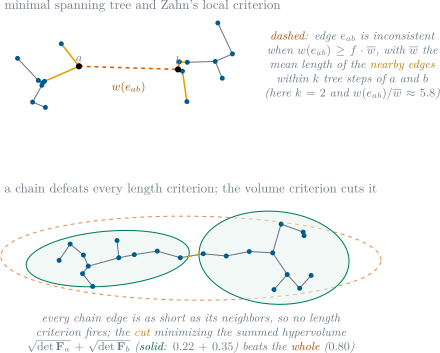
The second method addresses a different failure of the prototype. Even where the groups are clear, the distance may be wrong: when the data lie on a curved low-dimensional manifold, such as a spiral arm (fig. 7.2) or an S-shaped sheet (fig. 7.18), two samples that are close in the Euclidean sense may be far apart along the manifold, and a center that is the mean of samples on both sides of a fold lies in empty space. Feil and Abonyi [84] replace the Euclidean distance by the geodesic distance: the length of the shortest path in a graph that links every sample with its nearest neighbors, with the edges weighted by their Euclidean lengths. This is the distance Isomap [85] uses to unfold manifolds, and it converges to the true geodesic as the sampling becomes dense [86]. Because geodesic distances exist only between samples, the prototypes are restricted to samples, which makes the algorithm a fuzzy c-medoid method in the spirit of Kaufman and Rousseeuw [5] and places the medoids on the manifold automatically. The only structural parameter is : if it is too small, the manifold falls apart into several graph components; if it is too large, edges “short-circuit” arms that come close to each other.
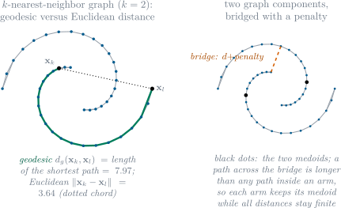
7.2 Theory
The notation is that of the rest of the book: with rows , memberships in the matrix (stored transposed in the code), prototypes with index (or ), samples with index . We treat the hybrid MST–GG algorithm first (sections 7.2.1 to 7.2.3), then the geodesic distance (section 7.2.4) and the two clustering algorithms built on it (sections 7.2.5 and 7.2.6).
7.2.1 The minimal spanning tree and Zahn’s cutting criteria
Let be the complete weighted graph on the samples, with edge weights (Euclidean here; any metric would do). A spanning tree is a connected subgraph without cycles that reaches every vertex; the minimal spanning tree is the one with the smallest total weight,
|
| (7.1) |
computable by Prim’s algorithm in time or by Kruskal’s in [87, 88] (fuzzyclust uses SciPy’s implementation on the dense distance matrix). Removing edges from leaves subtrees, and the sets of their vertices are the clusters; if is the length of a removed edge, no point on one side of it is closer than to a point on the other side. Clustering with the MST is therefore divisive hierarchical clustering, and the whole question is which edges to remove.
Criterion 1 (global threshold). Remove every edge longer than a multiple of the mean edge length,
|
| (7.2) |
or remove the longest edges one by one until the desired number of clusters is reached. Both forms presuppose a single density: the mean is dominated by the largest group, and a tight pair of groups sits below the threshold while the tails of a diffuse group are cut off (fig. 7.7).
Criterion 2 (local inconsistency). Zahn [81] compares an edge with its surroundings instead. Let be the set of tree edges within steps of either endpoint or of the edge (not counting itself), with mean length and standard deviation . The edge is inconsistent when
|
| (7.3) |
with a factor (typically
–)
or a number of standard deviations
. The
hybrid algorithm uses the ratio form; the deviation form, Zahn’s second
proposal, needs a deeper neighborhood, because the standard deviation of a
handful of edges is a poor reference. The reference length adapts to the
surroundings of every edge, so groups of widely different density are separated
(fig. 7.1, top), at the price of two parameters that interact: the deeper the
neighborhood, the more stable the reference and the wider the range of factors
that works. Both criteria cut edges in one pass; fuzzyclust applies the
flagged cuts longest first and refuses a cut that would create a component
smaller than min_cluster_size, which keeps single outliers from becoming
clusters.
7.2.2 Criterion 3: splitting by the fuzzy hypervolume
Length criteria compare distances and are blind to chains. The hybrid algorithm therefore judges a candidate partition by the quality of the clusters it produces, using a validity measure as the splitting criterion. Varma and Simon [89] used the Fukuyama–Sugeno measure [33] in this role; Vathy-Fogarassy, Feil and Abonyi take the fuzzy hypervolume of Gath and Geva [21], because the clusters will be refined by Gath–Geva clustering, to which the hypervolume belongs. For a partition with centers , the fuzzy covariance matrix, the hypervolume of cluster and the total hypervolume are
|
| (7.4) |
evaluated during the tree phase with the crisp memberships of the tree partition. The alternative criterion of Varma and Simon, in its crisp form,
|
| (7.5) |
with
the global mean, rewards compact clusters with distant centers and is available as
criterion="fukuyama_sugeno".
The splitting starts with the subcluster of largest volume . Each of its tree edges is removed in turn, which produces a binary split into and and a candidate partition with total volume ; the cut with the smallest total volume is the best split of this subcluster. fuzzyclust accepts the best split when its relative gain,
|
| (7.6) |
exceeds a threshold (
by default) and each part has at least min_cluster_size samples; otherwise
the next largest subcluster is tried, and the procedure stops when no
subcluster can be improved or max_clusters is reached. The threshold is the
toolbox’s reading of the paper’s “special parameters that control the
generalization level of the hierarchical clustering tree”: cutting a few
tail points off a compact group always lowers the volume a little, and
the relative gain separates such cosmetic cuts from real structure. The
criterion spares Gaussian groups and breaks chains. Halving a Gaussian
group along its principal axis reduces the variance along that axis to
, so each half
keeps about
of the volume and the two halves together have
times the volume of the whole; the split brings no gain. For two compact
groups joined by a chain, the determinant of the union is inflated by the
distance between the groups, and the parts are much smaller (fig. 7.1,
bottom). A curved group is split into arcs for the same reason, and
this is intended: every final cluster is then well approximated by one
Gaussian, which is the representation the refinement needs. Evaluating all
cuts
is cheap: with the subtree rooted at any vertex, the count, the sum of
and the sum
of below
every vertex are accumulated in one pass from the leaves to the root, and the statistics
of both sides of any edge follow by subtraction, so the statistics of all candidate cuts
cost ,
plus two
determinants (one for each side) per cut.
When the number of clusters is given (n_clusters=c), the same
machinery is steered toward it: coarse cuts of Criteria 1–2 beyond
are undone
shortest first, and the volume splitting continues with the best available cut, gain or no
gain, until
clusters exist. This makes the estimator usable in the validity
scans of the toolbox; the scan of the volume indices over
shows a knee at the number where the automatic rule stops (fig. 7.10).
7.2.3 Gath–Geva refinement and the analysis of the result
The tree partition is crisp and carries no model. In Step 4 of the
algorithm it initializes Gath–Geva clustering with as many clusters as
the tree partition has: the crisp membership matrix is the starting
, and the GG
iterations (prior ,
center , fuzzy
covariance ,
exponential distance, membership update) run to convergence as in section 3.2.5.
GG is a maximum-likelihood estimator of a Gaussian mixture and is notoriously
sensitive to its initialization: started from FCM or at random on a chained or
curved data set, it merges a group with a chain or splits a group. Here, however,
it only has to polish the tree partition, and it does so without leaving it (fig. 7.5).
The result is a fuzzy partition with centers, covariance matrices and priors: a
compact parametric description of clusters whose shapes the tree found, and the
basis of the membership contours and covariance ellipses in the figures. (FCM as
refinement, refine="fcm", is pulled off the tree partition by the chain points;
refine=None keeps the crisp partition with the covariances of the tree
clusters.)
Two measures evaluate the result. The adequacy of a cut that produced clusters and is read off the refined memberships,
|
| (7.7) |
which is
when the two endpoints belong firmly to different clusters and
when
the refinement has re-united them (cut_quality_). The clusters themselves are
compared as fuzzy sets over the samples by the ratio of fuzzy intersection and
union,
|
| (7.8) |
a symmetric matrix with unit diagonal (cluster_similarity_). Used as the
distance
in single-linkage clustering, it yields a dendrogram of the clusters: pieces of one
nonconvex group share samples with intermediate memberships and join at a low
level, while pieces of different groups do not, so the dendrogram shows
which clusters may be merged and how they are related in the original
space (fig. 7.12). GG memberships are nearly crisp, so the similarities
are small (the dendrogram in the paper also spans only the range from
to
), but
their order carries the structure.
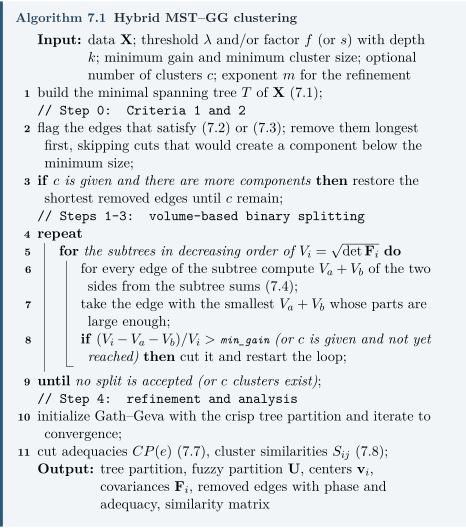
In a nutshell: Hybrid MST–GG clustering
- Divisive clustering on the minimal spanning tree: Zahn’s global and local length criteria separate distinct groups (also of different density); the fuzzy hypervolume criterion cuts chains and bends that length criteria cannot see and spares Gaussian groups.
- The tree partition initializes Gath–Geva clustering, which turns it into a mixture of Gaussians with memberships and covariances without destroying it; nonconvex groups come out as Gaussian pieces.
- Parameters: factor
and depth
of the local criterion (–
with
in the examples), or a global ;
min_gainandmin_cluster_sizefor the splitting;n_clustersto steer toward a given number. - Analysis: cut adequacy , similarity of the fuzzy clusters and its dendrogram for merging and visualization; memory for the distance matrix.
7.2.4 Geodesic distances on a neighborhood graph
Let the samples lie on (or near) a smooth manifold of lower dimension. The intrinsic distance between two samples is the length of the shortest curve on connecting them, the geodesic distance , which can differ arbitrarily from the Euclidean chord (fig. 7.2, left). Isomap [85] approximates it in two steps. A neighborhood graph links each sample with its nearest neighbors (-Isomap) or with all samples within a radius (-Isomap), every edge weighted by its Euclidean length; the graph distance , the length of the shortest path found by Dijkstra’s or Floyd’s algorithm [90, 91], then stands in for . Bernstein et al. [86] prove that as the sampling density grows: short edges follow the manifold, and the shortest path cannot cut through empty space because there are no edges there. The approximation is good when (or ) is large enough for the graph to be connected along the manifold and small enough that no edge jumps across a gap between folds or arms (a “short-circuit”). The scale-free is easier to set than , and the number of connected components of the graph is the first diagnostic.
Components are the practical difficulty: if the graph is disconnected, the geodesic distance between components is undefined (infinite). The paper treats the components of the spiral as distinct manifolds that the clustering should keep apart. fuzzyclust follows this and makes it operational: components are linked through their closest pair of points by a bridge whose length is the Euclidean gap plus a penalty, by default equal to the largest finite geodesic distance of the unbridged graph (fig. 7.2, right). Every distance is then finite, and a path across a bridge is longer than any path inside a component, so clusters do not span components, while a component without a medoid still receives memberships through its bridge instead of being lost. The penalty can be set to zero when the components are known to be fragments of one manifold ( too small), in which case the plain bridge re-joins them at their natural junctions (fig. 7.20).
7.2.5 Algorithm II: geodesic distance based fuzzy c-medoids
The clustering minimizes the c-means functional of Bezdek [3] with geodesic distances and prototypes restricted to samples,
|
| (7.9) |
under the usual constraints . The restriction is forced by the distance, since exists only between samples, and it is welcome: a medoid lies on the manifold by construction, whereas a mean of samples on both sides of a fold does not (fig. 7.18). The alternating optimization has the two familiar steps. For fixed medoids, the Lagrange conditions give the FCM membership formula with ,
|
| (7.10) |
and for fixed memberships every sample is tried as the medoid of every cluster, and the one with the smallest weighted sum of squared geodesic distances is taken,
|
| (7.11) |
which is one matrix product
of the squared distance matrix with the powered memberships,
per
iteration. The iterations stop when the medoids no longer change (or
). The paper
starts from
arbitrary samples. fuzzyclust defaults to a
D-weighted
seeding on geodesic distances (init="kmeans++"), because a medoid rarely migrates
across a penalized bridge during the iterations: a random start that puts every
medoid into one graph component leaves the other components without a
prototype. Random starts with restarts are available as well. The dense geodesic
distance matrix and the exhaustive medoid search limit the method to a few
thousand samples; the paper points to sampling schemes such as CLARA [5] for
larger data sets. A new sample has no geodesic distance of its own; fuzzyclust
enters the graph at the nearest training sample and adds the Euclidean
distance to it, which is exact for training points and adequate close to the
manifold.
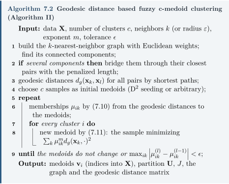
In a nutshell: Geodesic fuzzy c-medoids
- The c-means functional with the geodesic (shortest-path) distance of a -nearest-neighbor graph and medoids as prototypes: clusters follow the manifold, and memberships fade along it, not across it.
- One structural parameter, : large enough to keep each manifold connected, small enough not to connect different ones; the component count and the plateau of the result over show the usable range.
- Disconnected components are bridged with a penalty (kept apart, all distances finite) or, when they are fragments of one manifold, with plain bridges; plays its usual role.
- memory and time per iteration, which suits small and medium data sets; new samples enter through their nearest training sample.
7.2.6 Algorithm I: clustering of the Isomap projection
The paper’s first route leaves the manifold entirely to Isomap and clusters its output. Classical multidimensional scaling [92] of the geodesic distance matrix gives coordinates that reproduce the geodesic distances as well as possible: with , the matrix is decomposed, and is formed from its largest eigenpairs. The discarded share of the eigenvalue mass is the residual variance, and its decrease with indicates the intrinsic dimension of the manifold. Fuzzy c-means is run on , and each center is “re-projected” into the feature space as the sample whose projection is closest to it, so that the prototypes lie on the manifold here too; the cost (7.9) evaluated with geodesic distances to the re-projected centers compares the two routes. The weakness is the projection: Isomap can only embed a connected graph (hence the bridges), and a projection that folds the manifold spoils the clustering. The paper found Algorithm II slightly better on the S-curve and the spiral; in fuzzyclust the two reach nearly the same geodesic cost (fig. 7.18).
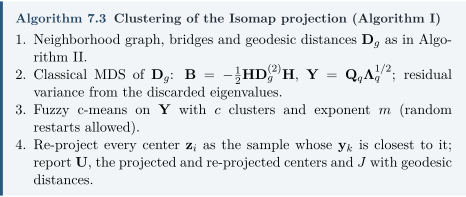
In a nutshell: Clustering of the Isomap projection
- Isomap unfolds the manifold, FCM clusters the flat picture, and the centers return to the data space as the closest samples.
- Needs a connected (or bridged) graph and a good projection; the residual variance tells how much of the geodesic geometry dimensions keep.
- The graph parameters of Algorithm II (components are always
bridged) plus the embedding dimension ;
the FCM step inherits
initandn_init.
7.3 Using it in fuzzyclust
Everything in this chapter is in fuzzyclust.graph. The three estimators derive from BaseFuzzyClusterer and have the usual methods fit, predict, predict_proba, transform and score. The graph utilities are functions built on the sparse-graph routines of SciPy, so no optional dependency is needed; networkx is accepted only as an alternative backend for the tree.
fuzzyclust.graph.MSTClustering
n_clusters=None, threshold=None, inconsistency=2.5,
inconsistency_std=None, n_hops=2, criterion="hypervolume"|
"fukuyama_sugeno", min_gain=0.15, min_cluster_size=5, max_clusters=20,
refine="gg"|"fcm"|None, m=2.0, gamma=0.0, tol, max_iter, backend="scipy"|
"networkx", random_state, verbose.
Attributes n_clusters_, tree_labels_ (crisp tree partition), labels_,
membership_, cluster_centers_, covariances_, mst_edges_, mst_weights_,
cut_edges_, cut_phases_ (0: length criteria, 1: volume), cut_quality_
(), hypervolumes_,
cluster_similarity_ (),
refiner_ (the fitted GG or FCM). min_gain=1.0 disables the splitting phase
(unless n_clusters is given); threshold=None and inconsistency=None, with
the default inconsistency_std=None, disable the length criteria.
fuzzyclust.graph.GeodesicFCM
n_clusters=3, n_neighbors=10, radius=None, connect_components=True,
bridge_penalty=1.0, m=2.0, tol, max_iter, init="kmeans++"|"random"|
index array, n_init=1, random_state, verbose.
Attributes medoid_indices_, cluster_centers_ (the medoids), membership_,
labels_, geodesic_distances_, neighbors_graph_, n_components_,
component_labels_, bridge_edges_, objective_, objective_history_,
n_iter_. New samples enter the graph through their nearest training
sample.
fuzzyclust.graph.IsomapFCM
n_clusters=3, n_components=2, n_neighbors=10, radius=None,
bridge_penalty=1.0, m, tol, max_iter, init, n_init, random_state,
verbose.
Attributes embedding_ (),
embedded_centers_, medoid_indices_, cluster_centers_ (re-projected),
membership_, labels_, geodesic_objective_, residual_variance_, fcm_ and
the graph attributes of GeodesicFCM.
graph utilities, data generators and plot helpers
minimum_spanning_tree(X, backend) edges, lengths; neighbors_graph(X, n_neighbors, radius) sparse adjacency; geodesic_distances(X, n_neighbors, radius, connect_components, bridge_penalty) Bunch(distances, graph, n_components, component_labels, bridges); isomap_embedding(D, n_components) coordinates, eigenvalues; fuzzy_cluster_similarity(U) . Generators make_chained_blobs, make_density_blobs, make_s_curve (with make_rings, make_two_moons, make_curved_manifold of fuzzyclust.datasets). Plots plot_mst(X, model), plot_neighbors_graph(X, graph_or_model), plot_geodesic_path(X, graph, source, target), plot_similarity_dendrogram(S).
The classical tree clusterer and the hybrid one differ in two parameters:
tree_only = MSTClustering(threshold=None, inconsistency=None, min_gain=1.0, refine=None).fit(X) zahn = MSTClustering(inconsistency=2.5, n_hops=2, min_gain=1.0, refine=None).fit(X) print("tree only :", tree_only.n_clusters_, "cluster") print("Zahn (f=2.5):", zahn.n_clusters_, "clusters, cut edges:", len(zahn.cut_edges_))
mst = MSTClustering(random_state=0).fit(X) print("clusters found:", mst.n_clusters_) print("cut phases :", mst.cut_phases_, " (0 = length criteria, 1 = volume criterion)") print("hypervolumes :", mst.hypervolumes_.round(3))
The refinement and its adequacy measures are part of the fit, and the number of clusters can be prescribed and scanned with the validity functions of the toolbox:
gg_random = GG(n_clusters=mst.n_clusters_, random_state=0).fit(X) ari_tree = adjusted_rand_score(y[blob], mst.tree_labels_[blob]) ari_gg = adjusted_rand_score(y[blob], mst.labels_[blob]) ari_random = adjusted_rand_score(y[blob], gg_random.labels_[blob]) print(f"ARI of the blobs: tree partition {ari_tree:.2f}, MST-GG {ari_gg:.2f}, GG from random start {ari_random:.2f}") print("cut adequacy CP(e):", mst.cut_quality_.round(2))
cs = range(2, 9) rows = [] for c in cs: model = MSTClustering(n_clusters=c, random_state=0).fit(X) U, V = model.membership_, model.cluster_centers_ rows.append(( validity.fuzzy_hypervolume(X, U, V), validity.partition_density(X, U, V), validity.average_partition_density(X, U, V), adjusted_rand_score(y, model.labels_), )) rows = np.array(rows) auto = MSTClustering(random_state=0).fit(X) print("volume criterion alone picks", auto.n_clusters_, "clusters")
The geodesic clusterer is a drop-in replacement for FCM, and the geodesic distances and paths are available on their own:
k = 8 results = {} for name, (X, y) in datasets.items(): fcm = FCM(n_clusters=2, random_state=0).fit(X) geo = GeodesicFCM(n_clusters=2, n_neighbors=k, random_state=0).fit(X) results[name] = (fcm, geo) print(f"{name:16s}: FCM ARI = {adjusted_rand_score(y, fcm.labels_):.2f}, " f"geodesic c-medoids ARI = {adjusted_rand_score(y, geo.labels_):.2f} " f"({geo.n_components_} graph component(s), {geo.n_iter_} iterations)")
geo = geodesic_distances(X, n_neighbors=8) D, G = geo.distances, geo.graph # two samples of the first arm, far apart along the arm arm = np.flatnonzero(y == 0) radius = np.linalg.norm(X[arm], axis=1) source, target = arm[radius.argmin()], arm[radius.argmax()] print(f"Euclidean distance {np.linalg.norm(X[source] - X[target]):.2f}, geodesic distance {D[source, target]:.2f}")
fcm = FCM(n_clusters=8, random_state=0).fit(Xs) geo = GeodesicFCM(n_clusters=8, n_neighbors=10, random_state=0).fit(Xs) iso = IsomapFCM(n_clusters=8, n_components=2, n_neighbors=10, random_state=0).fit(Xs) # geodesic cost of the FCM partition, with the samples closest to its centers as prototypes Dg = geo.geodesic_distances_ fcm_proxies = np.linalg.norm(Xs[:, None] - fcm.cluster_centers_[None], axis=2).argmin(axis=0) J_fcm = float(np.sum(fcm.membership_**2 * Dg[:, fcm_proxies] ** 2)) print(f"geodesic cost J: FCM {J_fcm:.0f}, Isomap + FCM {iso.geodesic_objective_:.0f}, " f"geodesic c-medoids {geo.objective_:.0f}") print(f"Isomap residual variance with 2 components: {iso.residual_variance_:.3f}")
7.4 Examples
7.4.1 Cutting, splitting and refining the tree
Two Gaussian groups of 120 points are joined by a chain of 25 points (fig. 7.3).
Without any criterion the tree is one cluster. Zahn’s local criterion with
and
flags
one edge, inside the chain close to the left group, so most of the chain stays
attached to the right group: the length criteria cannot separate the groups
from the chain. The volume criterion (fig. 7.4) makes two further cuts,
one where the chain meets the right group and one in the middle of the
chain. The result is four tree clusters, the two groups with hypervolumes
and
(the
left one with the six chain points left of the length cut) and two chain pieces with
and
, and the points
of the two groups are separated exactly. Started from this partition, Gath–Geva keeps it
(agreement
with the tree partition) and delivers the membership contours and covariance
ellipses of fig. 7.5; the same GG started from a random partition with four
clusters spends one Gaussian on the whole chain and collapses another
onto a few points at the edge of the left group. The cut adequacies are
for the cut of
the length criterion, whose endpoints the refinement re-united in the neighboring chain
piece, and
and
for the two volume cuts. The parameter study (fig. 7.6) shows the
number of tree clusters falling as the required relative gain rises from
to
:
from twenty to six with min_cluster_size=2, from five to two with the
default size of five, and from three to two with sizes of ten and twenty,
which remove the small fragments altogether. The printed comparison
of the refinements shows FCM pulled off the tree partition (agreement
)
while GG stays on it.
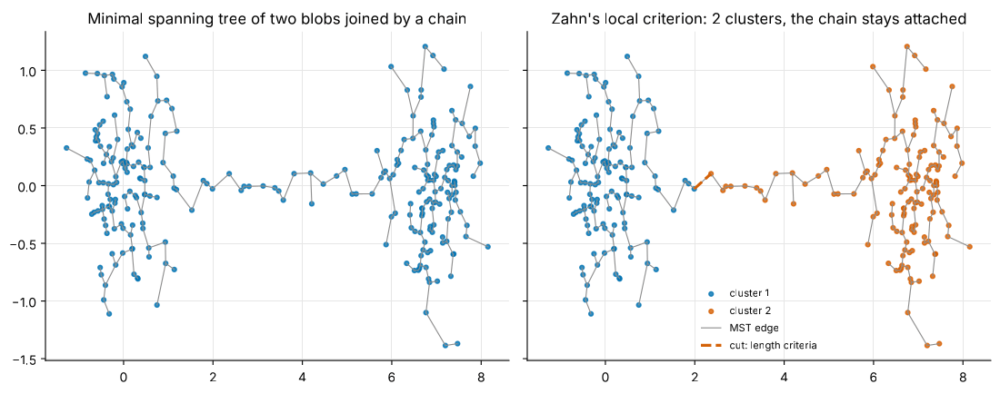
Open in ColabExample plot_01_mst_clustering.py in the gallery
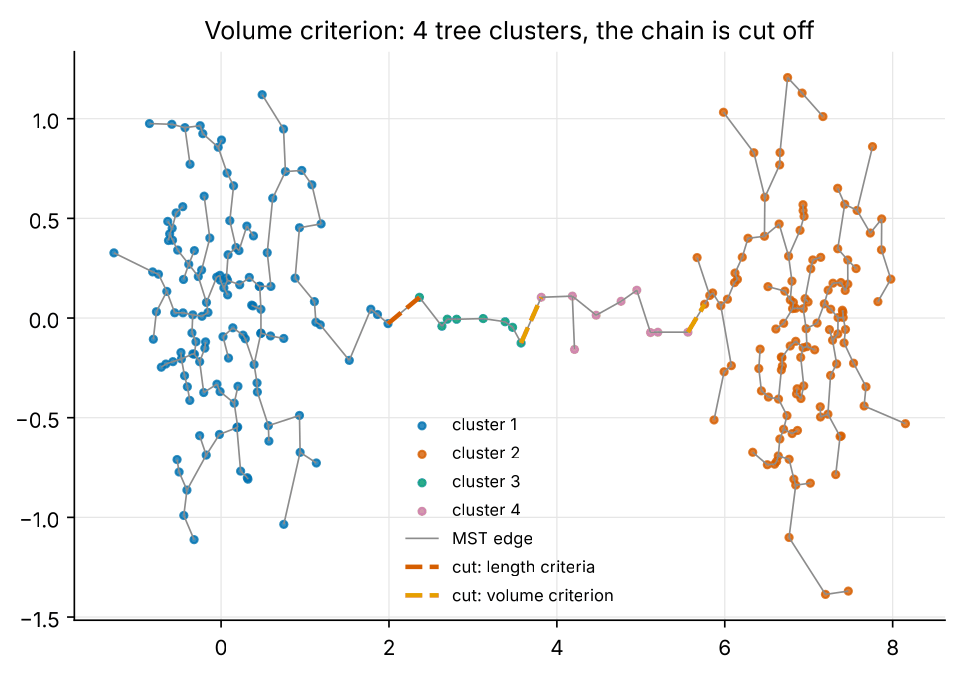
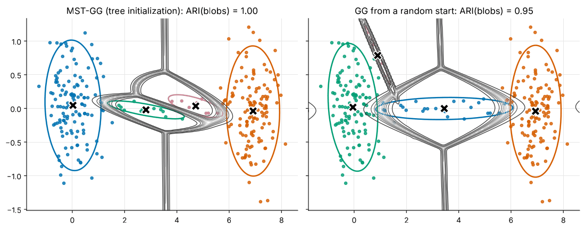
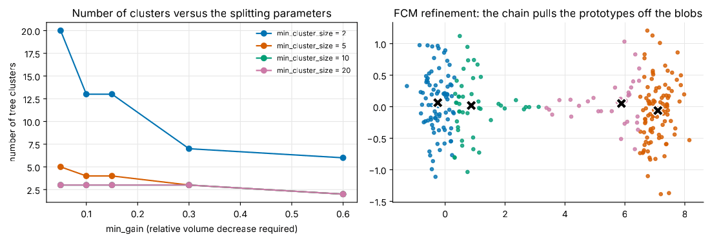
7.4.2 Which edges are inconsistent?
The data are a diffuse group of 200 points next to two tight groups of 40 points
(fig. 7.7). A global threshold of twice the mean edge length cuts eight clusters
out of the tree, mostly tails of the diffuse group; four times the mean leaves the
two tight groups merged, and the printed scan shows that no threshold in
between returns the three groups: the edge between the tight groups is no longer
than the longest edges inside the diffuse group (fig. 7.8). The local criterion with
and
finds the three groups exactly, because each separating edge is far longer
than its own neighbors. Figure 7.9 varies the factor and the depth: with
no factor returns the
three groups ( fragments
the diffuse group, already
misses a separation), with
or every
between
and
works
(with
from
on), and
misses a separation for every depth; the deviation form needs
at three standard
deviations and
at four. Raising min_cluster_size tames an eager criterion
(,
: from
ten clusters at size 5 to four at size 20).
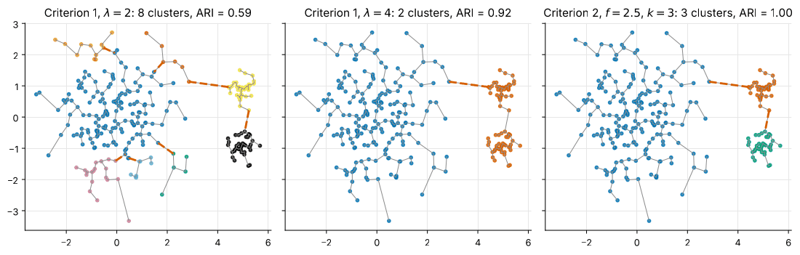
Open in ColabExample plot_02_mst_cut_criteria.py in the gallery
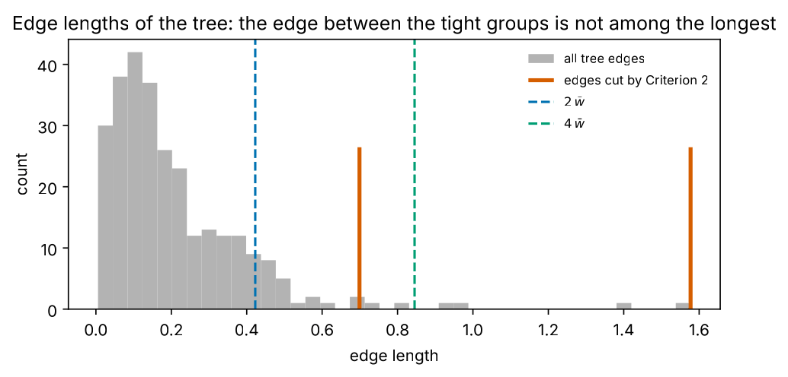
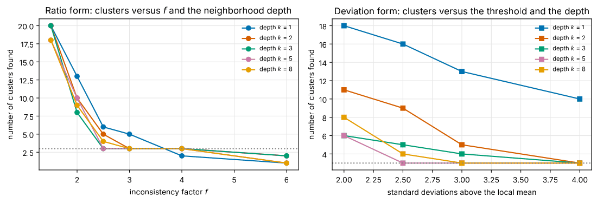
7.4.3 How many clusters?
Four Gaussian groups of different sizes are clustered with n_clusters from 2 to 8,
and the volume indices of Gath and Geva are computed from the refined
partitions (fig. 7.10). The fuzzy hypervolume falls by 38 % from three to four
clusters and by less than 3 % for every further split; the partition density rises
steeply up to four and then stays flat; the average partition density peaks at four
but is overtaken at eight, where small dense fragments appear. The knee,
not the extremum, carries the information, and the relative decrease of
drops below the
default min_gain of
exactly where the automatic run stops, at four. Two concentric rings (fig. 7.11)
show the limits of the refinement: the tree partition with two clusters separates
the rings perfectly, but a Gath–Geva refinement of two clusters fails (ARI
),
because one Gaussian cannot describe a hollow ring and the inner ring is absorbed
by the broad outer Gaussian. Without a prescribed number, the volume criterion
keeps splitting the rings into arcs that are approximately Gaussian until max_clusters
is reached; with max_clusters=12 it produces twelve arcs, and the refinement of the
arcs is faithful. Their fuzzy similarity matrix (fig. 7.12) has its large entries
between neighboring arcs of the same ring, the single-linkage dendrogram of
has two
main branches, and cutting it into two groups merges the arcs back into the rings (ARI
). The similarities grow
with the exponent
of the refinement (the largest same-ring entry rises from
at
to
at
)
while the merge stays correct, and the number of arcs follows max_clusters.
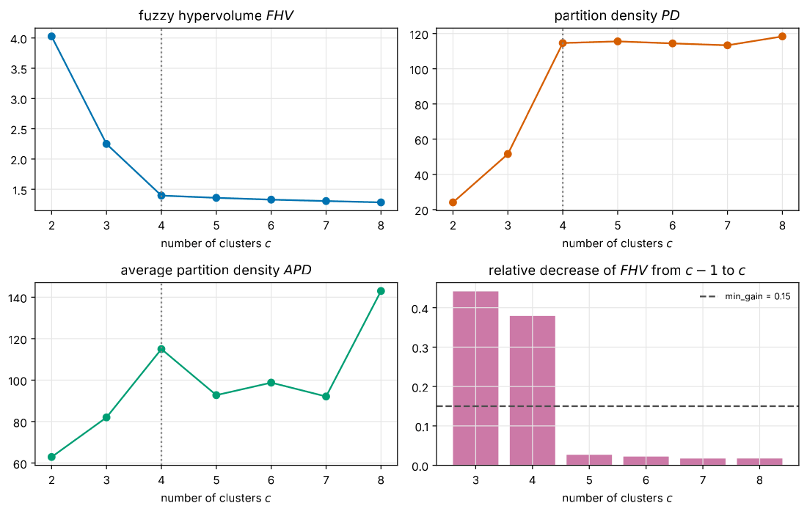
Open in ColabExample plot_03_mst_validation.py in the gallery
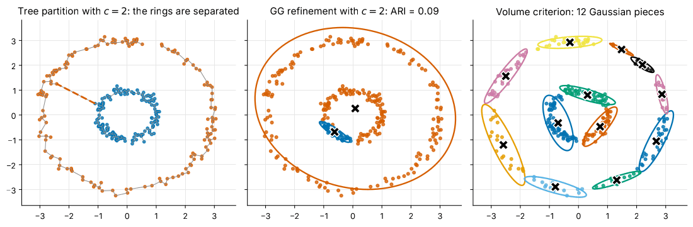
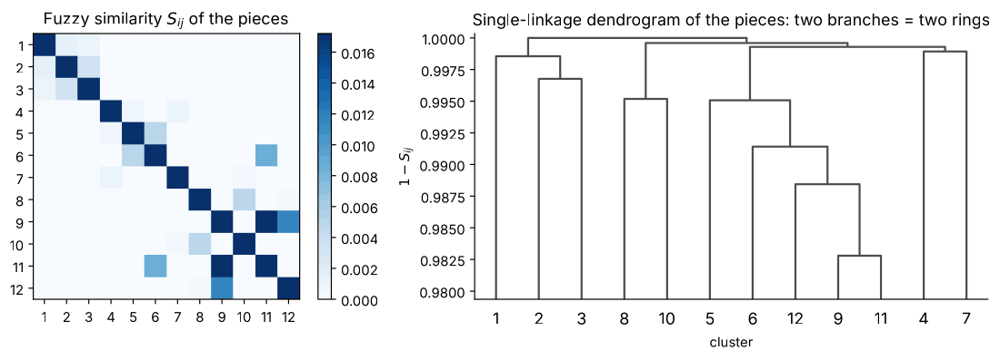
7.4.4 Geodesic c-medoids versus fuzzy c-means
The data sets are two spiral arms, two moons and two rings, each with
two clusters (fig. 7.13). FCM reaches adjusted Rand indices of only
,
and
, because
its centers cut straight across the manifolds, while the geodesic c-medoids with
recover all three groupings exactly in three to five iterations. The spiral forms one
graph component in which the path between the arms runs through the
center; the moons and the rings fall into two components that are bridged
with a penalty. The memberships (fig. 7.14) fade along the arm from
the medoid toward its ends, while a point of the other arm that is close
in the Euclidean sense keeps a membership near zero. The scan over
(fig. 7.15) shows the two failure modes. A small
fragments the sparsely sampled outer parts of the arms into
components that have to be bridged, and the result degrades; a large
connects the arms where they come close, and the geodesic
distance loses its meaning. On the spiral the plateau spans
to
, on the
moons
to .
Moons whose gap is narrower than the sample spacing form one component already
at
(fig. 7.15, right) and cannot be separated for any
(fig. 7.16):
the graph cannot resolve a gap the sampling does not resolve. The printed study shows the
usual effect of
on the softness of the partition. It also shows that on the rings a
plain Euclidean bridge (bridge_penalty=0) lets the far side of the
outer ring switch to the inner medoid through the bridge (ARI
),
whereas both the penalized bridge and infinite distances (connect_components=False)
keep the rings apart.
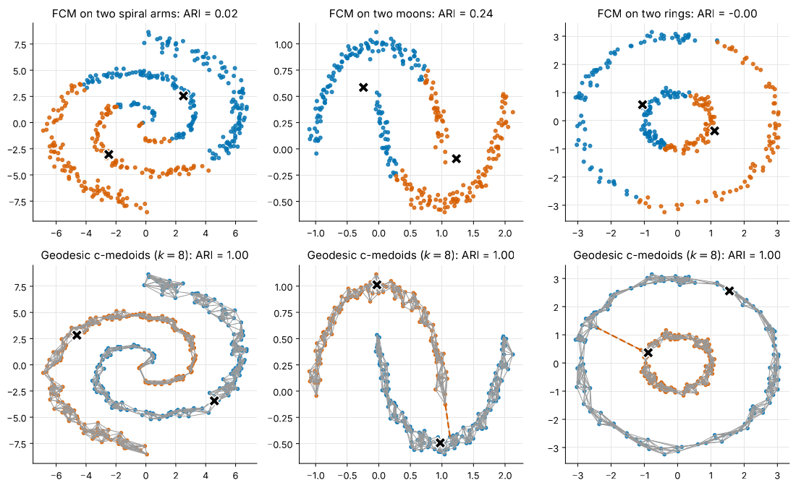
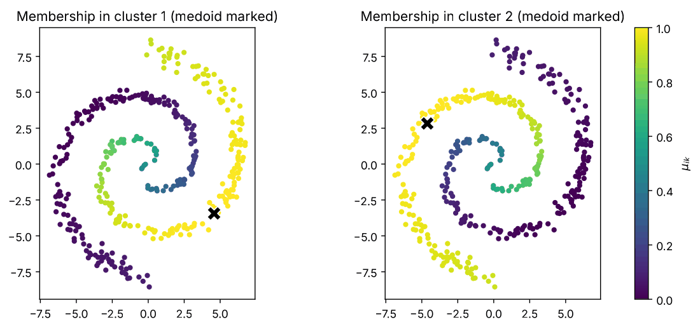
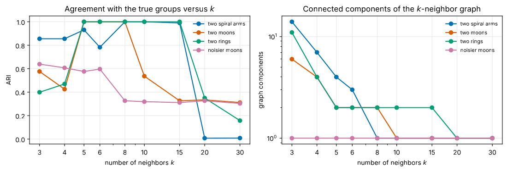
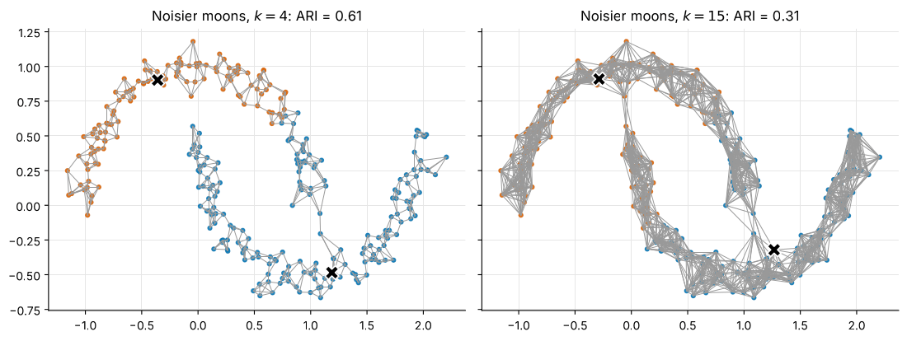
7.4.5 Geodesic paths, the S-curve and the Isomap route
Figure 7.17 traces shortest paths through the graph of the spiral: between the inner and the outer end of one arm the geodesic distance is against a chord of , and the closest outer pair of samples of different arms, apart in the plane, is apart along the graph. On the three-dimensional S-curve with eight clusters (fig. 7.18) the FCM centers float between the layers of the S (up to from the nearest sample), while the medoids of Algorithm II and the re-projected centers of Algorithm I lie on the sheet. The geodesic cost of the partitions is for FCM against and for the two geodesic routes, which thus reach nearly the same solution by different means. The Isomap projection unrolls the S into a rectangle that FCM tiles regularly, and the geodesic clusters cover the sheet in the same way (fig. 7.19). The study of Algorithm I on the spiral (fig. 7.20) shows the role of the bridges when the graph is fragmented: with the arms break into seven components. The penalized bridges keep every fragment apart in the projection, and two clusters cannot collect them (ARI for both algorithms), whereas plain bridges re-join the fragments of an arm at their natural junctions, and both algorithms recover the arms. With the graph is connected and the bridges play no role. On the S-curve, two and three Isomap dimensions give nearly the same geodesic cost ( and ), whereas a single dimension raises it to ; the residual variance drops from with one component to with two.
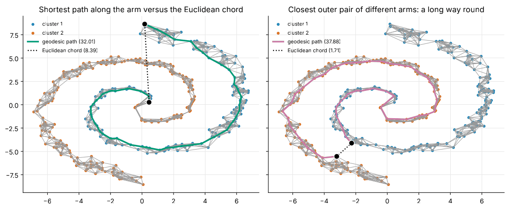
Open in ColabExample plot_05_geodesic_path_isomap.py in the gallery
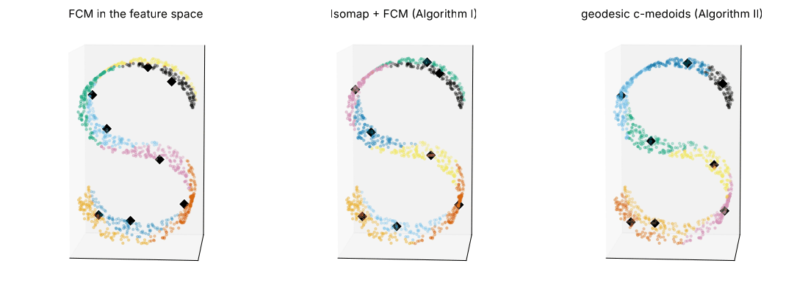
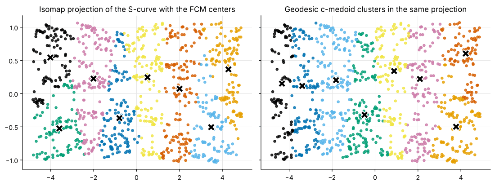
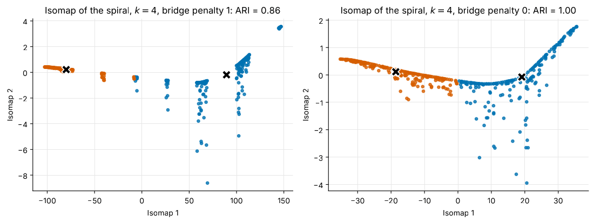
7.5 Further reading
The hybrid MST–GG algorithm was published in [83]; it builds on Zahn’s graph-theoretical clustering [81], on the relation between the minimal spanning tree and single linkage [82], on the tree algorithms of Prim and Kruskal [87, 88], on the hypervolume and density indices of Gath and Geva [21], on the Fukuyama–Sugeno measure [33] as used by Varma and Simon [89], and on compatible cluster merging [40] for the idea of merging similar fuzzy clusters; the Gath–Geva refinement may use the covariance regularization of [19]. Graph-theoretic and hierarchical clustering in general are covered by [4]. The geodesic clustering algorithms are from [84], which rests on Isomap [85] and the convergence of graph distances to geodesics [86], on shortest paths [90, 91], on classical multidimensional scaling [92], on the c-means functional [3] and on the medoid methods of Kaufman and Rousseeuw [5]; locally linear embedding [93] is the other classical manifold method the paper mentions. The fuzzy Sammon mapping of chapter 5 [51] is the natural tool for inspecting the clusters found here when the data have more than two dimensions.